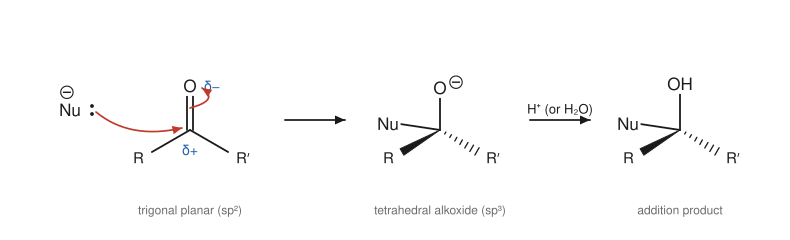
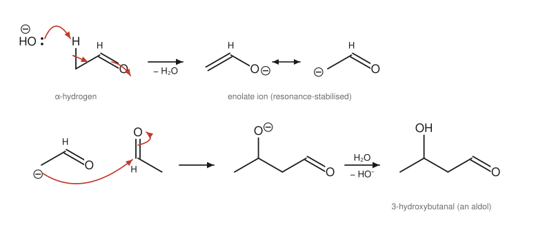

Chapter 11: Aldehydes and Ketones¶
Nucleophilic addition to the carbonyl group
The carbonyl group, C=O, is the most important functional group in organic chemistry. It appears in aldehydes and ketones, in carboxylic acids and their derivatives, in sugars and in many of the molecules of life. Its chemistry rests on one simple fact: the carbon is electron-poor and the oxygen electron-rich. Nucleophiles attack the carbon; acids and electrophiles attach to the oxygen. This chapter treats aldehydes and ketones, where the main reaction is nucleophilic addition. It also introduces the second great theme of carbonyl chemistry, the acidity of the hydrogens next to the C=O group and the reactions of enols and enolates.
Learning outcomes
By the end of this chapter you should be able to:
- describe the structure and polarity of the carbonyl group and the physical properties of aldehydes and ketones;
- explain why aldehydes are more reactive than ketones;
- write the general mechanisms of nucleophilic addition under basic and acidic conditions;
- predict the products of addition of water, HCN, hydride reagents, Grignard reagents, alcohols and amines;
- use acetals as protecting groups;
- distinguish aldehydes from ketones with Tollens', Fehling's or Benedict's reagent, and recognise methyl ketones with the iodoform test;
- explain keto–enol tautomerism and the acidity of α-hydrogens, and write the mechanism of the aldol reaction.
11.1 The carbonyl group¶
In an aldehyde, the carbonyl carbon carries at least one hydrogen (RCHO; in methanal, HCHO, it carries two). In a ketone, it carries two carbon groups (RCOR′). Naming was covered in Section 2.4: the suffixes are -al and -one.
The carbonyl carbon is sp² hybridised and trigonal planar, with bond angles near 120°. The C=O double bond consists of a σ bond and a π bond, and both are polarised towards oxygen. The polarity can be pictured with two resonance contributors, C=O and C⁺–O⁻ (Example 1.4). The second is minor, but it shows clearly that the carbon is electrophilic and the oxygen nucleophilic and basic.
Physical properties¶
Carbonyl compounds are polar, so their boiling points are higher than those of alkanes of similar mass, but they cannot hydrogen bond to one another, so they boil lower than alcohols. Propanal (58 g mol⁻¹) boils at 48 °C, between butane (−1 °C) and propan-1-ol (97 °C). The oxygen can accept hydrogen bonds from water, so small aldehydes and ketones are water-soluble; propanone mixes with water in all proportions and is a widely used solvent. Methanal is a gas, usually supplied as an aqueous solution (formalin), and is toxic. Many larger aldehydes and ketones have pleasant odours and are used as flavourings and in perfumes: benzaldehyde smells of almonds, and vanillin, the main flavour of vanilla, is an aromatic aldehyde.
Making aldehydes and ketones¶
The main routes are covered in earlier chapters: oxidation of primary alcohols (to aldehydes) and secondary alcohols (to ketones) (Section 10.5), ozonolysis of alkenes (Section 7.6), hydration of alkynes (Section 7.8) and Friedel–Crafts acylation of arenes (Section 8.4).
11.2 Nucleophilic addition: the general mechanism¶
A nucleophile adds to the carbonyl carbon. As the new bond forms, the π electrons move onto the oxygen, giving a tetrahedral alkoxide intermediate. Protonation of the oxygen then gives the addition product. The carbon changes from trigonal planar (sp²) to tetrahedral (sp³).

There are two variants:
- Basic conditions, strong nucleophile. A strong, usually negatively charged nucleophile (H⁻ from a hydride reagent, R⁻ from a Grignard reagent, CN⁻) attacks the neutral carbonyl directly. The alkoxide is protonated in a later step, often by adding water or dilute acid.
- Acidic conditions, weak nucleophile. A weak nucleophile (water, an alcohol) does not attack a neutral carbonyl fast enough. An acid catalyst first protonates the carbonyl oxygen. The protonated carbonyl, whose positive charge is shared between O and C, is a much stronger electrophile, and the weak nucleophile attacks it.
If the two groups on the carbonyl carbon are different and the nucleophile is new, the addition creates a stereocentre. Attack on either face of the flat carbonyl is equally likely (unless the molecule or the reagent is chiral), so a racemic product results.
Why aldehydes are more reactive than ketones¶
Aldehydes undergo nucleophilic addition faster and more completely than ketones, for two reasons:
- Steric: an aldehyde has a small hydrogen on the carbonyl carbon, so a nucleophile approaches more easily, and the tetrahedral product, with four groups crowded around one carbon, is less strained.
- Electronic: alkyl groups donate electrons and reduce the partial positive charge on the carbonyl carbon. A ketone has two alkyl groups, an aldehyde only one.
Methanal, with two hydrogens, is the most reactive of all.
11.3 Addition of oxygen, carbon and hydride nucleophiles¶
Water: hydrates¶
In water, aldehydes and ketones are in equilibrium with their hydrates (geminal diols, two OH groups on one carbon). The reaction is catalysed by both acid and base. The position of the equilibrium reflects the reactivity of the carbonyl compound: methanal is almost entirely hydrated in water, ethanal about half, and propanone hardly at all. Hydrates usually cannot be isolated, because removing the water reverses the reaction.
Hydrogen cyanide: cyanohydrins¶
Cyanide ion adds to aldehydes and most ketones to give cyanohydrins, with OH and CN on the same carbon. A little base is needed to generate CN⁻, the true nucleophile, from HCN; in practice the reaction is done with a cyanide salt and a controlled amount of acid. The reaction is important because it forms a new C–C bond, and the nitrile group can later be converted into a carboxylic acid (Chapter 12) or an amine (Chapter 13).
Caution: cyanide
Hydrogen cyanide and cyanide salts are extremely toxic. Cyanohydrin reactions are carried out only by trained chemists with specialist precautions. This reaction is described for its chemistry, not as a laboratory procedure.
Hydride reducing agents¶
Sodium tetrahydridoborate, NaBH₄ (sodium borohydride), and lithium tetrahydridoaluminate, LiAlH₄ (lithium aluminium hydride), deliver a hydride ion (H⁻) to the carbonyl carbon. After protonation, aldehydes give primary alcohols and ketones give secondary alcohols:
NaBH₄ is mild and convenient; it can be used in water or ethanol and reduces aldehydes and ketones but not esters, carboxylic acids or C=C double bonds. LiAlH₄ is far more reactive: it also reduces esters, acids and amides (Chapter 12), and it reacts violently with water, so it must be used in a dry ether solvent, with the water added cautiously afterwards. Catalytic hydrogenation (H₂ with Ni, Pd or Pt) also reduces C=O groups, but it usually reduces C=C bonds as well.
Grignard reagents¶
A Grignard reagent, R–MgX (Section 9.6), is a source of the carbon nucleophile R⁻. It adds to carbonyl compounds to form a new carbon–carbon bond. After the addition, the magnesium alkoxide is protonated with dilute aqueous acid. The class of alcohol formed depends on the carbonyl compound:
| Carbonyl compound | Product after protonation | Example |
|---|---|---|
| methanal, HCHO | primary alcohol, RCH₂OH | CH₃MgBr + HCHO → ethanol |
| other aldehyde, R′CHO | secondary alcohol, RR′CHOH | CH₃MgBr + CH₃CHO → propan-2-ol |
| ketone, R′COR″ | tertiary alcohol, RR′R″COH | CH₃MgBr + CH₃COCH₃ → 2-methylpropan-2-ol |
| carbon dioxide, CO₂ | carboxylic acid, RCOOH | CH₃MgBr + CO₂ → ethanoic acid |
Table 11.1. Products of Grignard reagents with carbonyl compounds.
Example 11.1: Planning a Grignard synthesis
Suggest two ways to make 2-phenylbutan-2-ol, C₆H₅C(OH)(CH₃)CH₂CH₃, using a Grignard reagent.
The alcohol carbon carries three groups (phenyl, methyl, ethyl). Remove any one of them as the Grignard reagent; the rest forms the ketone.
(a) Ethylmagnesium bromide + 1-phenylethanone (C₆H₅COCH₃), then H₃O⁺.
(b) Phenylmagnesium bromide + butanone (CH₃COCH₂CH₃), then H₃O⁺.
(A third choice, methylmagnesium bromide + 1-phenylpropan-1-one, also works.) Working backwards from a target to simpler starting materials like this is called retrosynthesis.
11.4 Addition of alcohols: hemiacetals and acetals¶
An alcohol adds to an aldehyde or ketone under acid catalysis to give a hemiacetal, with an OH and an OR group on the same carbon. Hemiacetals are usually unstable and revert to the carbonyl compound, with one important exception: when the OH and the C=O are in the same molecule and can form a five- or six-membered ring, the cyclic hemiacetal is favoured. This is why glucose and other sugars exist mainly as rings (Chapter 15).
With excess alcohol and an acid catalyst, the hemiacetal reacts further: its OH is protonated, water leaves to give an oxygen-stabilised cation (R₂C=OR⁺), and a second alcohol molecule adds. The product, with two OR groups on one carbon, is an acetal:
Every step is reversible. Removing water drives the reaction towards the acetal; adding water and acid hydrolyses the acetal back to the carbonyl compound. Acetals are stable to bases, nucleophiles and hydride reagents, so they are used as protecting groups: a carbonyl group is turned into an acetal (often with ethane-1,2-diol, giving a cyclic acetal) while a reaction is carried out elsewhere in the molecule, and then released by aqueous acid.
Example 11.2: Using a protecting group
How could the ester group of methyl 4-oxopentanoate, CH₃COCH₂CH₂COOCH₃, be reduced with LiAlH₄ without also reducing the ketone?
(1) Protect the ketone as a cyclic acetal with ethane-1,2-diol and an acid catalyst (removing water). (2) Reduce the ester with LiAlH₄ (the acetal is unaffected) to give the primary alcohol. (3) Remove the protecting group with aqueous acid, regenerating the ketone. The product is 5-hydroxypentan-2-one, CH₃COCH₂CH₂CH₂OH.
11.5 Addition of nitrogen nucleophiles¶
Primary amines (RNH₂) add to aldehydes and ketones, and the addition product then loses water to give an imine (a Schiff base), containing a C=N double bond:
The reaction is fastest at a moderately acidic pH, around 4 to 5. Some acid is needed to protonate the OH of the intermediate so that it can leave as water; too much acid protonates the amine and destroys its nucleophilicity. Imine formation is reversible and is widely used in biology: many enzymes bind carbonyl-containing substrates as imines with the NH₂ groups of lysine side chains.
Derivatives of ammonia such as hydrazine (H₂N–NH₂) and hydroxylamine (H₂N–OH) react in the same way. A classic test for aldehydes and ketones uses 2,4-dinitrophenylhydrazine (Brady's reagent), supplied as a solution: it gives a yellow, orange or red precipitate of the 2,4-dinitrophenylhydrazone. Before spectroscopy, the melting point of this crystalline derivative was used to identify the original carbonyl compound.
11.6 Oxidation, and tests for aldehydes¶
Aldehydes have a hydrogen on the carbonyl carbon and are easily oxidised to carboxylic acids, even by mild oxidising agents. Ketones lack this hydrogen and resist oxidation except under harsh conditions that break C–C bonds. This difference is the basis of the classic tests that distinguish aldehydes from ketones:
- Tollens' reagent is a solution of the diamminesilver(I) ion, [Ag(NH₃)₂]⁺, in aqueous ammonia. Aldehydes reduce it to metallic silver, which deposits as a silver mirror on the inside of a clean test tube; the aldehyde is oxidised to a carboxylate ion.
- Fehling's solution and Benedict's solution contain blue copper(II) complexes in alkaline solution. Aliphatic aldehydes reduce them, on warming, to a brick-red precipitate of copper(I) oxide, Cu₂O. Benedict's test has long been used to detect reducing sugars such as glucose.
- Ketones give no reaction with any of these.
Caution: Tollens' reagent
Tollens' reagent must be freshly prepared for each test, used in small amounts, and washed away with dilute acid immediately afterwards. On standing, it can form explosive silver compounds.
The iodoform test¶
Iodine in aqueous sodium hydroxide reacts with methyl ketones (RCOCH₃) and with ethanal to give a pale yellow precipitate of triiodomethane (iodoform, CHI₃), which has a characteristic antiseptic smell. The three hydrogens of the methyl group are replaced by iodine, and the CI₃ group is then cleaved off as CHI₃, leaving a carboxylate ion. Alcohols that are oxidised under the conditions to methyl ketones or ethanal (ethanol and secondary alcohols of the form CH₃CH(OH)R) also give a positive test.
11.7 Enols, enolates and the aldol reaction¶
The carbon next to a carbonyl group is the α-carbon, and its hydrogens are α-hydrogens. They are much more acidic than ordinary C–H bonds: the pKa of the α-hydrogens of propanone is about 19, compared with about 50 for an alkane. Removing an α-hydrogen gives an enolate ion, whose negative charge is shared by resonance between the α-carbon and the oxygen.
Keto–enol tautomerism¶
An aldehyde or ketone with an α-hydrogen is in equilibrium with an isomer called its enol, in which the hydrogen has moved to the oxygen and the double bond has moved to between the α-carbon and the carbonyl carbon:
Isomers that interconvert rapidly by the movement of a hydrogen atom and a double bond are called tautomers. The interconversion is catalysed by both acid and base. For simple ketones the keto form is overwhelmingly favoured (propanone contains only a tiny fraction of enol at equilibrium), because the C=O bond is stronger than the C=C bond. But the small amount of enol or enolate present is the reactive species in many reactions.
The aldol reaction¶
When ethanal is treated with dilute aqueous sodium hydroxide, two molecules join together. Hydroxide removes an α-hydrogen to form an enolate. The enolate, a carbon nucleophile, adds to the carbonyl carbon of a second ethanal molecule. Protonation of the resulting alkoxide gives 3-hydroxybutanal, a compound that is both an aldehyde and an alcohol, hence the name aldol.

On heating, the aldol loses water (the OH and an α-hydrogen), giving an α,β-unsaturated aldehyde, but-2-enal. The overall process is an aldol condensation. It is one of the most important ways of making carbon–carbon bonds, and nature uses it too: an aldol-type reaction is a step in the breakdown of glucose in cells.
Key idea
Carbonyl compounds have two reactive sites. The carbonyl carbon is an electrophile, attacked by nucleophiles. The α-carbon, once deprotonated to an enolate, is a nucleophile. In the aldol reaction one molecule uses its α-carbon to attack the carbonyl carbon of another.
The enol and enolate are also involved in the halogenation of ketones at the α-carbon (as in the first stage of the iodoform reaction) and in the racemisation of ketones whose α-carbon is a stereocentre.
11.8 Summary¶
Summary
- The C=O group is polar: the carbon is electrophilic and the oxygen basic. Aldehydes are more reactive than ketones for steric and electronic reasons.
- Nucleophilic addition: the nucleophile attacks carbon, giving a tetrahedral alkoxide, which is protonated. Weak nucleophiles need acid catalysis.
- Water gives hydrates; HCN gives cyanohydrins; NaBH₄ and LiAlH₄ give alcohols (aldehyde → 1°, ketone → 2°); Grignard reagents give alcohols with a new C–C bond (methanal → 1°, aldehyde → 2°, ketone → 3°).
- Alcohols with acid give hemiacetals and acetals; acetals protect carbonyl groups and are removed by aqueous acid.
- Primary amines give imines; 2,4-dinitrophenylhydrazine gives coloured precipitates with aldehydes and ketones.
- Aldehydes are oxidised by Tollens' reagent (silver mirror) and Fehling's or Benedict's solution (red Cu₂O); ketones are not. Methyl ketones give iodoform.
- α-Hydrogens are acidic (pKa about 19); enolates and enols are nucleophilic at the α-carbon. The aldol reaction joins two carbonyl compounds.
11.9 Exercises¶
Exercise 1
Arrange in order of increasing reactivity towards nucleophilic addition, and explain: propanone, methanal, ethanal, 3,3-dimethylbutan-2-one.
Answer
3,3-Dimethylbutan-2-one < propanone < ethanal < methanal. Ketones are less reactive than aldehydes because two alkyl groups both hinder attack and reduce the δ+ charge on carbon. The tert-butyl group of 3,3-dimethylbutan-2-one makes it the most hindered. Methanal, with two hydrogens, is the least hindered and the most electrophilic.
Exercise 2
Give the product of each reaction: (a) butanal + NaBH₄, then H₂O; (b) cyclohexanone + CH₃MgBr, then H₃O⁺; (c) propanone + excess methanol with an acid catalyst; (d) benzaldehyde + methanamine (CH₃NH₂) at pH 5.
Answer
(a) Butan-1-ol. (b) 1-Methylcyclohexan-1-ol, a tertiary alcohol. (c) 2,2-Dimethoxypropane, an acetal (with water). (d) The imine C₆H₅CH=NCH₃ (N-benzylidenemethanamine), with water.
Exercise 3
Show how to make each alcohol from a Grignard reagent and a carbonyl compound: (a) pentan-3-ol; (b) 2-methylbutan-2-ol; (c) phenylmethanol (benzyl alcohol).
Answer
(a) Pentan-3-ol, (CH₃CH₂)₂CHOH, is a secondary alcohol: ethylmagnesium bromide + propanal, then H₃O⁺.
(b) 2-Methylbutan-2-ol, (CH₃)₂C(OH)CH₂CH₃, is tertiary: methylmagnesium bromide + butanone, or ethylmagnesium bromide + propanone, then H₃O⁺.
(c) Phenylmethanol, C₆H₅CH₂OH, is primary: phenylmagnesium bromide + methanal, then H₃O⁺.
Exercise 4
Write the mechanism of the acid-catalysed formation of the hemiacetal from ethanal and methanol.
Answer
(1) The carbonyl oxygen of ethanal is protonated by the acid, giving CH₃CH=OH⁺ (positive charge shared with the carbon). (2) A lone pair on the oxygen of methanol attacks the carbonyl carbon; the C=O π electrons move onto the protonated oxygen, which becomes an OH group. The methanol oxygen now has three bonds and a positive charge. (3) A base (another methanol molecule) removes the proton from that oxygen. Product: CH₃CH(OH)OCH₃, 1-methoxyethan-1-ol, and the acid catalyst is regenerated.
Exercise 5
Three liquids, C₃H₆O, are propanal, propanone and prop-2-en-1-ol (CH₂=CHCH₂OH). Describe simple chemical tests to identify each.
Answer
Brady's reagent (2,4-dinitrophenylhydrazine) gives an orange precipitate with propanal and propanone but not with the alcohol. Of those two, propanal gives a silver mirror with Tollens' reagent (or a red precipitate with Fehling's solution); propanone does not, but gives a yellow precipitate of iodoform with iodine and sodium hydroxide. Prop-2-en-1-ol decolourises bromine water (C=C) and fizzes with sodium (O–H).
Exercise 6
Which of these give a positive iodoform test? (a) propanone; (b) pentan-3-one; (c) ethanol; (d) propan-2-ol; (e) methanol; (f) 1-phenylethanone.
Answer
Positive: (a) propanone (a methyl ketone), (c) ethanol (oxidised to ethanal), (d) propan-2-ol (oxidised to propanone) and (f) 1-phenylethanone (a methyl ketone, C₆H₅COCH₃). Negative: (b) pentan-3-one (no CH₃CO group) and (e) methanol.
Exercise 7
Draw the enol form of cyclohexanone. Then give the aldol product formed from two molecules of propanal with dilute NaOH, and the product formed when it is heated.
Answer
The enol of cyclohexanone is cyclohex-1-en-1-ol: the OH on C1, with a C1=C2 double bond.
Propanal, CH₃CH₂CHO, has its α-hydrogens on C2. The enolate (from C2) attacks the carbonyl carbon of a second molecule. The aldol is CH₃CH₂CH(OH)–CH(CH₃)–CHO, 3-hydroxy-2-methylpentanal. On heating it loses water to give 2-methylpent-2-enal, CH₃CH₂CH=C(CH₃)CHO.
11.10 Quiz¶
Check your understanding of aldehydes and ketones
Exercise 1
Nucleophiles attack the carbonyl group at
- the oxygen
- the carbon
- the alpha-hydrogen
- the C=O pi bond from the oxygen end
Answer
the carbon
Exercise 2
Reduction of butanone with NaBH₄ gives
- butan-1-ol
- butan-2-ol
- butanal
- butanoic acid
Answer
butan-2-ol
Exercise 3
A Grignard reagent reacts with a ketone (after acid work-up) to give
- a primary alcohol
- a secondary alcohol
- a tertiary alcohol
- a carboxylic acid
Answer
a tertiary alcohol
Exercise 4
Which reagent gives a silver mirror with aldehydes but not with ketones?
- Tollens' reagent
- Brady's reagent
- bromine water
- Lucas reagent
Answer
Tollens' reagent
Exercise 5
Acetals are stable to
- aqueous acid
- bases and nucleophiles
- water with an acid catalyst
- all reagents
Answer
bases and nucleophiles
Exercise 6
What is the name of the product of the aldol reaction of two molecules of ethanal?
Answer
3-hydroxybutanal
Exercise 7
The pKa of the alpha-hydrogens of propanone is about
- 5
- 10
- 19
- 50
Answer
19